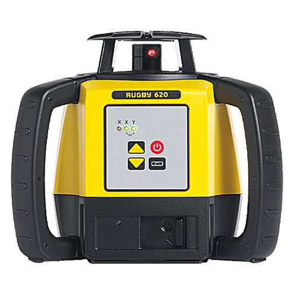
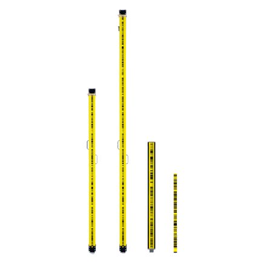
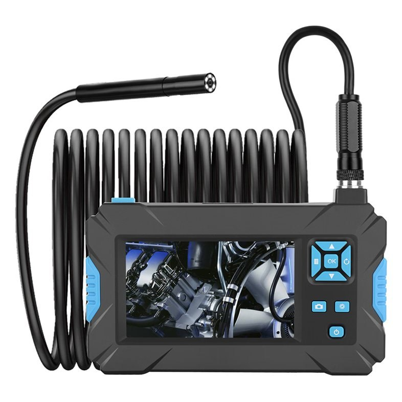
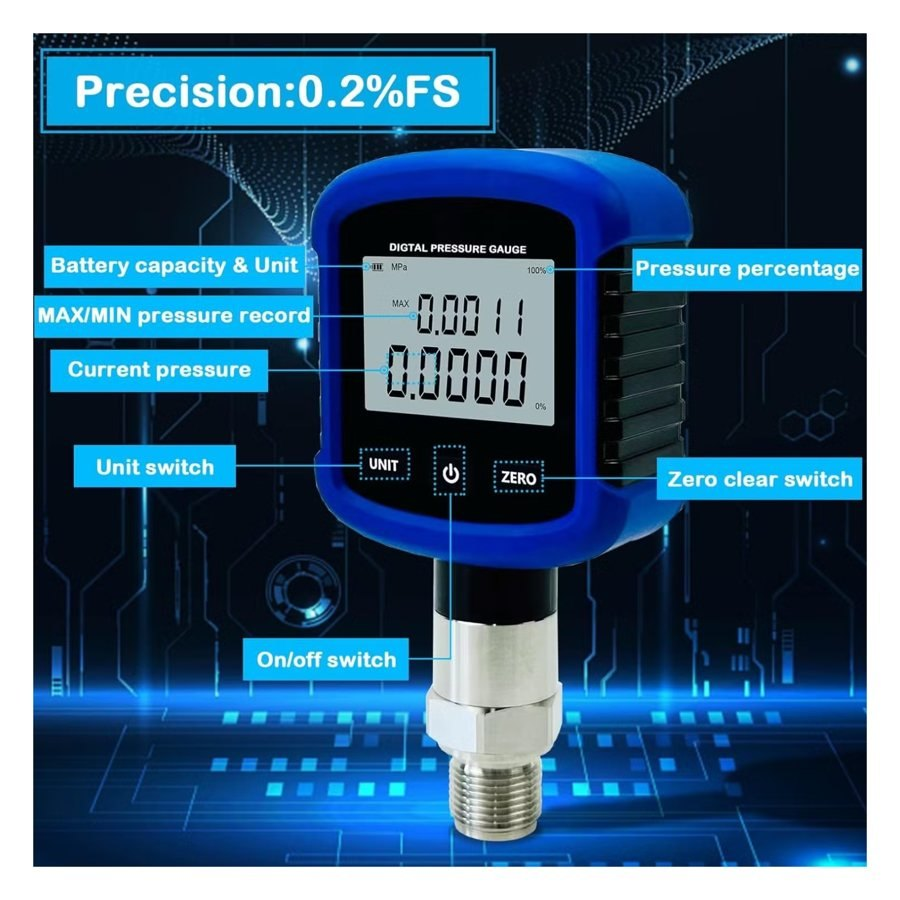

Start / Vermessung & Prüfung / Aluminium-Baustativ 5/8 Zoll für Nivellier und Rotationslaser (ca. 1,6 bis 1,8 m, Schnellspannbeine)

Abbildung ähnlich – zeigt den Produkttyp.
Vermessung & Prüfung
Aluminium-Baustativ 5/8 Zoll für Nivellier und Rotationslaser (ca. 1,6 bis 1,8 m, Schnellspannbeine)
Verwindungssteifes Aluminiumstativ mit Flachkopf für Nivelliergeräte und Rotationslaser im Baualltag.
Das Baustativ gibt Nivelliergerät, Rotationslaser oder Linienlaser einen steifen Stand auf unebenem Grund. Entscheidend sind für Profis Verwindungssteifigkeit, spielfreie Beinverriegelung und ein Kopf, der die Gerätelibelle nicht verzieht; Käufer bemängeln an gebündelten Set-Stativen genau das Wackeln. Für den EU-Vertrieb sind GPSR-Angaben, REACH für Kunststoffteile und eine transportsichere Verpackung nötig.
Technische Daten
| Material | Aluminium |
|---|---|
| Kopf | Flachkopf, Durchmesser 160 mm (Rund- und Domkopf als Option) |
| Beinverriegelung | Drehverschluss oder Doppelverschluss je Ausführung |
| Gewicht | 4,3 kg netto, 6,0 kg brutto |
| Verpackung | 1 Stück je Karton, 110 × 21 × 21 cm |
| Zolltarifnummer (HS) | 90159000 |
EU-Normen und Vorschriften
ISO 12858-2 (informativ)Optik und optische Instrumente – Hilfsmittel für geodätische Instrumente – Teil 2: Stative(EU) 2023/988 (GPSR)REACH (EC) 1907/2006Chemikalienverordnung: SVHC-Erklärung für Beschichtungen, Kunststoff- und MetallteileVerpackG / LUCID
Passt dazu

Automatik-Nivelliergerät 32x (Baunivellier)

Rotationslaser selbstnivellierend (zweiachsig, roter Strahl)Selbstnivellierender Rotationslaser mit zwei neigbaren Achsen, Scanwinkeln und Fernbedienung für Höhen- und Gefälleabgleich auf dem Baufeld.

3D-Kreuzlinienlaser 3×360° (12 Linien, grün)Selbstnivellierender Kreuzlinienlaser mit drei 360°-Ebenen für Lot- und Waagerechtlinien bei Trockenbau, Fliesen- und Installationsarbeiten.

Tachymeter / Totalstation reflektorlos (500–600 m)Reflektorlose Totalstation für Absteckung, Bestandsaufnahme und Aufmaß mit Winkel- und Streckenmessung in einem Gerät.
Weitere Produkte dieser Kategorie

Laser-Entfernungsmesser 50–100 m (Bluetooth)Handlicher Laser-Entfernungsmesser mit Neigungssensor und Bluetooth für schnelles Aufmaß von Längen, Flächen und Volumen.

GNSS-RTK-Empfänger mit Neigungssensor (Rover, Multi-Konstellation)Kompakter RTK-Rover mit integrierter IMU für Absteckung, Geländeaufnahme und Kontrollmessung ohne Totalstation-Aufbau.

Leichtes Fallgewichtsgerät (dynamischer Plattendruckversuch, Evd)Tragbares Fallgewichtsgerät zur schnellen Bestimmung des dynamischen Verformungsmoduls Evd von Planum und Tragschichten.

Laserempfänger / Detektor für Rotationslaser (rot und grün, mit Klemmhalter)Handlicher Empfänger, der den Strahl eines Rotationslasers bei Tageslicht und auf Distanz findet und die Höhe digital anzeigt.

Laser-Sichtbrille grün (Laserlinien-Verstärker für Kreuzlinien- und Rotationslaser)Grün getönte Sichtbrille, die grüne Laserlinien bei hellem Umgebungslicht kontrastreicher macht; eine Sehhilfe, kein Laserschutz.

Teleskop-Nivellierlatte Aluminium 5 m (E-Teilung, mit Libelle und Tasche)Teleskoplatte aus Aluminium mit E-Teilung und Libelle, ausgezogen 5 m, im Tragebeutel transportierbar.

Maßband / Bandmaß 5 m (EG-Klasse II)Rollbandmaß 5 m mit nylonbeschichtetem, doppelfarbig bedrucktem Stahlband, rutschfestem Gehäuse und Gürtelclip.

Gliedermaßstab / Zollstock 2 mZweimeter-Gliedermaßstab mit 10 Gliedern aus schlagfestem ABS-Kunststoff, metrische Skala, in mehreren Farben.

Stift-Feuchtemessgerät für Holz und BaustoffeDigitales Handmessgerät mit Stiftelektroden zur schnellen Materialfeuchte-Messung.

Infrarot-Thermometer handgehalten mit LaserpunktBerührungsloses Handthermometer für Oberflächentemperaturen.

Digitaler Neigungsmesser mit MagnetfußKompakter Winkelmesser mit Magnet zur schnellen Winkel- und Gefällekontrolle.

Digitaler Messschieber 150 mm EdelstahlElektronischer Messschieber mit LCD für Außen-, Innen- und Tiefenmaße.

Handheld-Inspektionskamera (Endoskop) mit FarbdisplayHandgerät mit schlanker Kamerasonde und LED zur Sicht in Hohlräume.

Digitalmanometer für Luft und FlüssigkeitenElektronisches Druckanzeigegerät mit LCD und Gewindeanschluss.

Digitales Thermo-Hygrometer für InnenräumeKleines Raumklimagerät mit Temperatur- und Luftfeuchteanzeige.
Digitalmultimeter automatisch, CAT IIIHandmultimeter für Spannung, Strom und Widerstand mit Autorange.